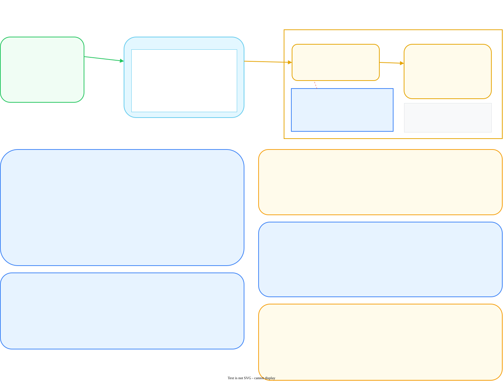

Azure Foundry Integration
Connecting the gateway to an Azure Foundry endpoint: the full target URI and the single deployment name, the four authentication modes and the two a hosted gateway cannot use, the role assignment on the Azure side, and a verified first call
What this covers
Azure Foundry serves models from an endpoint inside the customer's own Azure subscription. The gateway does not call a shared provider address for this tile. It calls a URL the customer owns, pins one API version, and optionally names one deployment. Those three fields describe the whole endpoint, and they are what separates this tile from the Azure OpenAI tile directly above it in the provider list.
This page covers the Azure side and the provider-specific half of the wizard: the target URI, the API version, the deployment name, the four authentication modes, and the role assignment that lets an identity run inference. Workspace provisioning and the model list in step 4 behave the same for every provider, and configuration chapter 9 owns them.
| What Azure Foundry asks for | Why it asks |
|---|---|
Azure Target URI | The endpoint host belongs to the customer, so the gateway has no default to fall back on. OpenAI and Anthropic each publish one global endpoint and neither asks. |
Azure API Version | Azure versions its REST surface with an api-version value that travels on the request. One value applies to the whole integration. |
Azure Deployment Name, optional | A model becomes callable in Azure once it is deployed and named. The field holds one name. |
| A role assignment on the target resource | Three of the four modes authenticate with an Azure identity, and an Azure identity carries no permission of its own. The role supplies the authorization half. |
The two Azure tiles share the Azure Authentication Mode control and all four of its options. They describe the endpoint and the deployments differently, and that difference decides which tile a customer needs.
| Azure OpenAI | Azure Foundry | |
|---|---|---|
| Endpoint field | Azure Resource Name, the first label of the host | Azure Target URI, a full URL |
| Deployments | A Foundation Model block holding many entries, each with its own API version and one marked default | One optional Azure Deployment Name, and one Azure API Version for the integration |
| Model picker | Select Azure Foundation Model | None |
Azure OpenAI holds many deployments inside a single integration. Azure Foundry holds one deployment name and one API version, so a customer running several Foundry deployments needs several integrations, or callers that name the deployment themselves. Count the deployments before sizing the work, and settle the slug convention around that count before creating the first integration. Step 3 of the prerequisites works through it.
Every Azure Foundry field label, placeholder and field order quoted here was read from the Add LLM Integration wizard in a tenant on 2026-11-17, with all four authentication modes selected in turn. Several details on the form were not opened, and the open items at the foot of the page name each one. Everything else is what the console shows.
Azure Foundry and Azure OpenAI are separate tiles in the provider catalog, they sit next to each other in the picker, and their configurations do not transfer. A customer who says "Azure AI" has not said which one. The endpoint fields are the fastest way to tell them apart: a form asking for Azure Resource Name and carrying a Foundation Model block is the Azure OpenAI tile.
Neither tile is Microsoft Copilot Studio. Copilot Studio is a different product on a different runtime, and nothing configured here applies to it.
Configuration chapter 9 owns the provider-agnostic flow: the three tabs, the slug convention, the model allowlist, workspace provisioning, and budget and rate limits. Section 7 of the model prerequisites page is the shorter pre-engagement checklist for the same provider. Configuration chapter 3 covers pointing a credential field at Azure Key Vault instead of pasting a value.

Prerequisites
Five things have to be settled before the wizard is opened. Four of them come from Azure, and one of them decides which authentication paths exist for this customer at all.
The field takes a full URL rather than a host label, and its placeholder reads Enter Azure Foundry URL. Take the value from the Foundry resource itself, and take it as the resource publishes it.
- Open the Azure Foundry resource in the Azure portal and read the endpoint URL it publishes.
- Record the URL in full, including the scheme.
- Compare it against the URL an application already calls successfully, where one exists. That request is the strongest evidence of the shape the endpoint expects.
The placeholder confirms that the field takes a URL. Whether the gateway expects the bare host, the host with a path segment, or a trailing slash was not captured, and no published source states it. Record the endpoint exactly as the resource publishes it, try that value first, and keep the alternatives to hand for the first model call.
A consultant arriving from the Azure OpenAI tile has spent that engagement extracting the first label of the host. This field wants the opposite. Entering a bare label produces a URL the gateway cannot resolve, and the failure appears at the first call rather than at save time.
The recorded value is a complete URL with a scheme, and it matches the endpoint shown on the Foundry resource character for character.
The integration carries one Azure API Version and one optional Azure Deployment Name. Both values come from the customer, and both are easier to collect before the session than during it.
- Read the
api-versionvalue the customer's applications already send to this endpoint. Take it from a working request rather than from a release note. - Read the deployment name from the Foundry resource, spelled exactly as Azure spells it.
- Record the model the deployment runs beside the deployment name, for context.
In Azure the model gets a name when it is deployed, and that name is whatever the person who deployed it chose. One endpoint can carry a deployment called chat-prod and another called chat-canary running the same model at different versions. Write the deployment names down, record the model names beside them, and never substitute one for the other.
The Azure OpenAI tile pins a version per deployment. This tile pins one for the integration, so changing it changes request handling for every caller at once. Where two applications depend on different versions of the REST surface, they need separate integrations.
The api-version value was read from a request an application makes today, and the deployment name was read from the Azure resource rather than from a model catalog.
This tile holds one deployment name and one API version. A customer with four Foundry deployments therefore reaches a different plan from a customer with one, and the plan affects every slug that ends up in application code.
- List every Foundry deployment the gateway should expose.
- For each one, record its API version alongside it.
- Create one integration per deployment where the versions differ, or where the customer wants separate budgets, rate limits or allowlists per deployment.
- Name the slugs so the deployment is visible in the slug:
azure-foundry-chat-prodrather thanazure-foundry-prod, following the convention in configuration chapter 9.
Callers name the integration by slug in every request, so renaming one later means changing every application that sends it. A single-deployment convention such as azure-foundry-prod survives exactly until the second deployment arrives, and at that point every application already points at it. Settle the convention across all of the customer's integrations before naming this one.
What the integration does when Azure Deployment Name is left empty was not captured. The field is marked optional, so the gateway accepts an empty value, and how a request then resolves to a deployment is unknown. Fill the field in until someone confirms the empty behavior, and treat a plan that depends on leaving it empty as untested.
The count of integrations to create is written down, every one of them maps to exactly one deployment, and the slug of each names the deployment it reaches.
This answer decides whether two of the four modes exist for this customer. Ask it before naming any of them out loud.
| Gateway | Modes available |
|---|---|
| SaaS gateway | Default and Azure Entra. Managed and Workload Identity both need the gateway to run on Azure compute, so neither is available. |
| Hybrid data plane running on Azure | All four. |
| Hybrid data plane running anywhere else | Default and Azure Entra, for the same reason. |
Check the Strata Cloud Manager gateway list. The Total Gateways count on the AI Gateway page counts Hybrid data planes only, so a tenant with no Hybrid data plane reads zero there and is a SaaS deployment.
You can name the gateway this integration runs on, and for a Hybrid data plane you can name the Azure compute hosting it. An answer of "both" means the integration has to work on the SaaS gateway too, which rules out Managed and Workload Identity.
Two separate kinds of Azure permission are needed, and they usually sit with two different people. A session holding one and not the other stalls halfway through.
| To do this | Someone needs |
|---|---|
| Read a key on the Foundry resource | Permission to read keys on that resource. Needed for the Default mode only. |
| Register an application in Entra ID | The Application Developer role, or an Entra tenant that permits users to register applications. Needed for the Azure Entra mode only. |
| Create a user-assigned managed identity | Write permission in the resource group holding the identity. Needed for the Managed and Workload Identity modes. |
| Add a federated credential to that identity | Write permission on the managed identity itself. Needed for the Workload Identity mode only. |
| Assign a role on the Foundry resource | Owner or User Access Administrator on the resource or its scope. Needed for every mode except Default. |
Registering an application is a directory operation and assigning a role is a subscription operation. An engineer who can do the first frequently cannot do the second, and the integration saves cleanly either way. The gap appears for the first time when a call returns an authorization failure.
For the path chosen in the next section, you can name the person in the room who holds each permission in its row, or a change request is raised for the one nobody holds.
Choose a path
Azure Foundry does not use the three-card Authentication Type control that the OpenAI tile uses. It carries the same control as the Azure OpenAI tile, named Azure Authentication Mode, with four options in this order: Default, Managed, Azure Entra and Workload Identity. The control sits directly below Slug, and no parent control sits above it.
Whichever mode is selected, the same three endpoint fields follow it in the same order: Azure Target URI, Azure API Version and Azure Deployment Name (optional). A collapsed Advanced Options section and a Pricing Adjustments row sit below them. This tile has no Optional Fields section, so nothing on the credential form is hidden except what Advanced Options holds.
| Mode | What the gateway stores | What Azure needs | Rotation and revocation |
|---|---|---|---|
Default |
A key for the Foundry endpoint, or a reference to it in a vault | Nothing beyond the resource itself. The key carries inference permission on its own. | Regenerate the key, which cuts off every other consumer of that key at the same moment. Revoke by regenerating. |
Managed |
Nothing. A client ID only, and only when the identity is user-assigned. The field reads Azure Managed ClientID (optional). | A managed identity on the Azure compute the gateway runs on, and an inference role assignment on the Foundry resource | No secret exists, so nothing rotates. Revoke by removing the role assignment. |
Azure Entra |
A tenant ID, a client ID and a client secret | An app registration, and an inference role assignment on the Foundry resource | Rotate the client secret in Entra on the expiry you set. Revoke by removing the role assignment, which takes effect without touching the gateway. |
Workload Identity |
A client ID and a tenant ID. No secret. | A user-assigned managed identity carrying a federated credential for the gateway workload, and an inference role assignment on the Foundry resource | No secret exists, so nothing rotates. Revoke by deleting the federated credential or removing the role assignment. |
A managed identity belongs to the Azure compute resource it is attached to, and the Azure instance metadata endpoint issues its token to code running on that virtual machine, scale set, container app or AKS node. The SaaS gateway does not run on the customer's Azure compute, so there is no identity for it to present and no way to attach one. Workload Identity rests on the same requirement through a different mechanism: the gateway workload has to present a token Azure AD already trusts, which again places the gateway inside the customer's Azure estate.
This is the most common wrong promise in an Azure engagement, because "keyless with managed identity" reads as a property of Azure rather than a property of where the gateway runs. A SaaS customer who wants no stored provider key gets the Azure Entra mode, which still stores a client secret, or moves to a Hybrid data plane on Azure. Settle it in Step 4, before any option is offered.
The product documentation states that Workload Identity Federation is supported for OpenAI and Anthropic only. This tile offers a Workload Identity mode, so do not tell a customer that Azure Foundry cannot federate. That mode asks for a client ID and a tenant ID, which makes it Azure AD workload identity rather than the token-exchange federation the OpenAI tile performs.
The endpoint key reaches a reasonable position when it lives in Azure Key Vault and the integration resolves it by reference, as configuration chapter 3 describes. Its weakness is shared blast radius: the key belongs to the resource rather than to the gateway, so regenerating it to rotate the gateway's credential also cuts off every application still holding it. Where the customer already shares that key widely, the Azure Entra mode gives the gateway a credential it can rotate alone.
Default, an API key
Default is the first card on the Azure Authentication Mode control and it is the API key path. Selecting it exposes one credential field, API Key, with the placeholder Enter API Key. This is the fastest route to a working call, and it proves the target URI, the API version and the deployment name are right before identity is added on top of them.
Two of the four steps below are shared. Every other mode on this page enters the wizard the same way and fills in the same three endpoint fields, and the modes differ only in what the credential control exposes above them.
The key comes from the same resource that publishes the endpoint URL recorded in Step 1. Where the resource offers two keys, take the second one and leave the first untouched for the applications already using it, which makes a later rotation possible without a simultaneous cutover.
- Open the Azure Foundry resource in the Azure portal.
- Copy a key, and record which key was taken.
- Store it in Azure Key Vault and create the secret reference described in configuration chapter 3.
Converting a pasted key into a vault reference afterwards means editing the integration a second time, and the pasted copy has already been typed into a browser in the meantime. Create the reference before creating the integration.
The key is in the vault or on the clipboard, you can state which key it is, and the endpoint URL recorded in Step 1 came from this same resource.
- Go to AI Security > AI Gateway > Integrations > LLM Integrations, and confirm the workspace selector at the top left shows the workspace you intend to configure.
- Click Add LLM Integration.
- On Select A Provider, choose Azure Foundry. Its row reads
Azure AI exposes API to communicate with diverse set of foundational models, and the Azure OpenAI row sits directly above it. - Click Next: Set Details.
- Set Name to something a human reads, such as
Azure Foundry Production. - Set Slug to the value chosen in Step 3, which names the deployment this integration reaches. For example
azure-foundry-chat-prod.
The provider row selected, with Azure OpenAI on the line above it:
![Step 1 of the Add LLM Integration wizard, headed Select the LLM Provider, showing a searchable table of providers. The Azure Foundry radio button is selected and its row reads Azure AI exposes API to communicate with diverse set of foundational models. The Azure OpenAI row immediately above it is unselected and reads Azure OpenAI provides SOTA models deployed on MS Azure, with Open AI, Anthropic and Google above that and Bedrock, Bedrock Mantle, Claude Platform on AWS, Vertex AI, X AI and Meta AI below. A four-step rail on the left shows Select A Provider active, with Integration Details, Workspace Provisioning and Model Provisioning still to come.](../aigw-screenshots/aigw-int-azure-foundry-provider-selected.png)
The Azure OpenAI and Azure Foundry rows differ by one word in the provider name and by their descriptions. Selecting the wrong one produces a form asking for a resource name and carrying a Foundation Model block, which is the signal to go back a step rather than to fill it in.
The Integration Details step is open, the provider shown is Azure Foundry rather than Azure OpenAI, and the form below the mode control asks for Azure Target URI.
These three fields make the Azure Foundry tile different from every other provider in this set, and they sit in the same place in every mode: directly below whatever credential fields the mode exposes, and above the collapsed Advanced Options section.
| Field | Placeholder | What to enter |
|---|---|---|
| Azure Target URI | Enter Azure Foundry URL | The full endpoint URL recorded in Step 1, including the scheme. |
| Azure API Version | Enter Azure API Version | The api-version value from Step 2, taken from a working application request. One value applies to the whole integration. |
| Azure Deployment Name (optional) | Enter Azure Deployment Name | The deployment name from Step 2, spelled exactly as Azure spells it. |
There is no model dropdown on this form and no block for additional deployments. One integration describes one deployment, which is the consequence worked through in Step 3.
The deployment name field is marked optional and the behavior of an empty value was not captured. Fill it in. A deliberate plan to leave it empty, so that callers choose the deployment per request, has no verified basis in the console and needs testing in the customer's own tenant before it is promised.
All three fields hold values taken from Azure rather than from a model catalog, the target URI starts with a scheme, and the form shows no Foundation Model block anywhere.
- On the Azure Authentication Mode control, select Default. It is the leftmost card.
- Enter the key from Step A1 in the API Key field, which carries the placeholder
Enter API Key. Where the field offers a Secret Ref toggle, use it and select the Azure Key Vault reference rather than pasting the value. - Fill in the three endpoint fields as in Step A3.
- Click Next: Choose Workspace and continue to workspace and model provisioning.
The form with Default selected:
![Step 2 of the Add LLM Integration wizard for Azure Foundry, with the Azure Authentication Mode control set to Default, the leftmost of four cards reading Default, Managed, Azure Entra and Workload Identity. A single credential field labeled API Key sits below the control with the placeholder Enter API Key. Three endpoint fields follow it in order: Azure Target URI with the placeholder Enter Azure Foundry URL, Azure API Version with the placeholder Enter Azure API Version, and Azure Deployment Name marked optional with the placeholder Enter Azure Deployment Name. A collapsed Advanced Options section and a Pricing Adjustments row sit at the foot of the form. Name, Short Description marked Optional, and Slug sit above the mode control, all empty. No Foundation Model block and no model dropdown appear anywhere.](../aigw-screenshots/aigw-int-azure-foundry-auth-default.png)
The wizard accepts a wrong key, a wrong target URI and a deployment that does not exist, all without complaint. Every one of them surfaces for the first time at the first model call. Reach that call in the same session.
The wizard moves to Workspace Provisioning with the key entered and all three endpoint fields populated.
Managed identity
A managed identity is attached to an Azure compute resource and is presented by code running on that resource. The gateway can use one only when the gateway itself runs on Azure compute that has one, which means a Hybrid data plane on an Azure virtual machine, scale set, container app or AKS cluster. The SaaS gateway runs outside the customer's subscription, so this mode does not exist for it under any configuration.
Where the customer runs the SaaS gateway and the requirement is no stored provider key, the Azure Entra mode is the available answer. It removes the endpoint key and replaces it with a client secret, which is a smaller improvement than the customer may have been promised. Say so plainly rather than at the first call.
Managed is the second card on the Azure Authentication Mode control, and it exposes one field, Azure Managed ClientID (optional), with the placeholder Enter Managed ClientID. Where the gateway does run on Azure, this mode stores no secret at all. Azure issues the token to the compute resource, the role assignment authorizes it against the Foundry resource, and there is nothing to rotate and nothing to expire.
Two facts have to hold together. The gateway has to be a Hybrid data plane, and the Azure compute hosting it has to carry a managed identity the gateway process can use.
- Confirm in Strata Cloud Manager that this integration will be used by a Hybrid data plane, using the check in Step 4.
- Identify the Azure compute it runs on: a virtual machine, a scale set, a container app, or an AKS cluster.
- For AKS, confirm the gateway workload has an identity. The identity section of the Kubernetes deployment guide covers building that on Azure Kubernetes Service, and an AKS gateway usually belongs in the
Workload Identitymode instead.
You can name the Azure compute resource the gateway runs on and the managed identity attached to it, and that identity is the one the gateway process already uses to reach its cache or log store.
Azure has two kinds. A system-assigned identity is created with the compute resource and dies with it, and the gateway finds it without being told. A user-assigned identity is its own resource that can be attached to several compute resources, and a host carrying more than one of them has to be told which to use, by client ID.
For a user-assigned identity, read both IDs:
az identity show \
--name "<IDENTITY_NAME>" \
--resource-group "<RESOURCE_GROUP>" \
--query "{clientId:clientId, principalId:principalId}" -o tableFor a system-assigned identity on a virtual machine, read the principal ID:
az vm identity show \
--name "<VM_NAME>" \
--resource-group "<RESOURCE_GROUP>" \
--query principalId -o tsvThe principal ID is the service principal object ID, and the role assignment in Step M3 targets it. The client ID is what the gateway is given when it has to pick between several user-assigned identities on one host. Swapping them produces a role assignment on an object that does not exist, or a gateway asking for an identity Azure does not recognize.
You have the principal ID for Step M3, and for a user-assigned identity you also have its client ID. A system-assigned identity needs no client ID.
The identity authenticates by itself and holds no permission to call anything. The role assignment is what authorizes inference against this resource, and it targets the principal ID from Step M2 at the scope of the Foundry resource.
- Read the resource ID of the Foundry resource from its Properties pane in the portal, or with
az resource list. - Open the resource and go to Access control (IAM) > Add > Add role assignment.
- Select the inference role the resource offers, and assign it to the identity from Step M2.
az role assignment create \
--role "<INFERENCE_ROLE_NAME>" \
--assignee-object-id "<IDENTITY_PRINCIPAL_ID>" \
--assignee-principal-type ServicePrincipal \
--scope "<FOUNDRY_RESOURCE_ID>"Contributor and Owner both include the ability to read the resource keys, which hands a keyless credential the long-lived key this mode was chosen to remove, and Owner adds the ability to grant that to others. A managed identity on shared compute is reachable by anything running on that host, so the blast radius of a wide role is everything else on the machine. Pick the narrowest role on the resource that permits inference, and scope the assignment to the Foundry resource rather than to its resource group or the subscription.
The exact role name for a Foundry endpoint was not captured. The Azure OpenAI tile uses Cognitive Services OpenAI User, and whether the same role covers a Foundry endpoint is unconfirmed. Read the role list offered on the target resource, choose the inference role it names, and record which role was used so the next engagement does not repeat the search.
An Azure role assignment is not always effective the instant the portal confirms it. A call made immediately afterwards can still return an authorization failure. Wait, then retry, before investigating the assignment itself.
az role assignment list --scope "<FOUNDRY_RESOURCE_ID>" -o table lists the identity against the chosen role, and the scope column ends in the Foundry resource name rather than the resource group.
Create the integration as in Step A2, then select Managed on the Azure Authentication Mode control. The mode exposes one field above the three endpoint fields.
| Identity type | What the integration needs |
|---|---|
| System-assigned | Nothing. Leave Azure Managed ClientID (optional) empty. The gateway asks the Azure instance metadata endpoint for a token and gets the host's identity. |
| User-assigned | The client ID from Step M2, so the gateway asks for the right one of several. |
Fill in the target URI, the API version and the deployment name as in Step A3, then click Next: Choose Workspace.
The form with Managed selected:
![Step 2 of the Add LLM Integration wizard for Azure Foundry, with the Azure Authentication Mode control set to Managed, the second of four cards reading Default, Managed, Azure Entra and Workload Identity. One field sits below the control, labeled Azure Managed ClientID and marked optional, with the placeholder Enter Managed ClientID. Below it the three endpoint fields follow in order: Azure Target URI with the placeholder Enter Azure Foundry URL, Azure API Version with the placeholder Enter Azure API Version, and Azure Deployment Name marked optional with the placeholder Enter Azure Deployment Name. A collapsed Advanced Options section and a Pricing Adjustments row sit at the foot. No secret field and no API key field appear anywhere on the form.](../aigw-screenshots/aigw-int-azure-foundry-auth-managed.png)
The console marks the client ID field optional, which matches the Azure behavior: a host with one identity needs no disambiguation and a host with several does. Fill it in whenever the host carries more than one identity, including a host that has both a system-assigned identity and the user-assigned one this integration should use.
The wizard moves on with no secret entered anywhere, and the only credential field the mode exposed was Azure Managed ClientID (optional). A form asking for a secret means the Azure Entra card is selected rather than Managed.
Azure Entra
Azure Entra is the third card on the Azure Authentication Mode control. The gateway holds a client ID and a client secret for an Entra application, exchanges them for a token, and calls the Foundry endpoint with that token. The resource's own keys are not involved, so rotating the gateway's credential disturbs no other consumer, and withdrawing access is a role assignment change rather than a key regeneration.
This mode works on the SaaS gateway and on a Hybrid data plane anywhere. It needs work on two Azure surfaces: a registration in the directory, and a role assignment on the subscription.
Register one application for this integration rather than reusing an existing one. A shared registration means the role assignment that grants Foundry access also lands on everything else using that application, and removing the gateway's access later removes theirs.
- In the Azure portal, go to Microsoft Entra ID > App registrations > New registration.
- Set a name that identifies the consumer and the environment, such as
aigw-azure-foundry-prod. - Leave the supported account types at single tenant and leave the redirect URI empty. The gateway uses the client credentials flow, which has no redirect.
- Click Register.
- On the Overview page, copy the Application (client) ID and the Directory (tenant) ID.
The equivalent from the Azure CLI, which creates the application and its service principal together:
az ad sp create-for-rbac \
--name "aigw-azure-foundry-prod" \
--skip-assignment
az account show --query tenantId -o tsvAn app registration creates a directory object and a separate service principal object in the tenant, and they have different object IDs. The role assignment in Step S3 targets the service principal, which the portal lists under Enterprise applications. Using the app registration object ID there produces an assignment that resolves to nothing.
The application appears under App registrations and under Enterprise applications, and you have recorded both the Application (client) ID and the Directory (tenant) ID.
- In the registration, go to Certificates & secrets > Client secrets > New client secret.
- Set a description naming the consumer, and an expiry that matches the customer's rotation policy rather than the longest option offered.
- Copy the Value immediately. Azure shows it once and never again.
- Store it in Azure Key Vault and create the secret reference described in configuration chapter 3.
The expiry is a date in Entra that nothing in Strata Cloud Manager can see. On that date every call through this integration begins failing authentication, and the gateway reports an OAuth error rather than an expiry. Record the date in whatever the customer uses to track credential renewals before leaving this step, and record who owns the renewal.
The secret value is in the vault, the expiry date is recorded in the customer's renewal tracker with a named owner, and the Client secrets list shows exactly one secret for this registration.
The client ID and secret authenticate the gateway to Entra. They grant access to nothing. The role assignment authorizes inference calls against this specific Foundry resource, and without it the credential is valid and useless.
SP_OBJECT_ID=$(az ad sp show \
--id "<APPLICATION_CLIENT_ID>" \
--query id -o tsv)
az role assignment create \
--role "<INFERENCE_ROLE_NAME>" \
--assignee-object-id "$SP_OBJECT_ID" \
--assignee-principal-type ServicePrincipal \
--scope "<FOUNDRY_RESOURCE_ID>"Contributor and Owner both include the ability to read the resource keys. Granting either turns a credential that can only run inference into a credential that can extract the long-lived key the API key path uses, which is the exact exposure this path was chosen to avoid, and Owner adds the ability to grant that access to others. Neither role fixes a failing call: a 403 after this step means the principal or the scope is wrong, and widening the role hides the mistake instead of fixing it.
The exact role name for a Foundry endpoint was not captured, as Step M3 records. Read the roles offered on the target resource, pick the one that permits inference and nothing more, and write down which role was used.
az role assignment list --scope "<FOUNDRY_RESOURCE_ID>" -o table lists the service principal from Step S1 against the chosen role, and the scope column ends in the Foundry resource name. A scope that stops at the resource group or the subscription grants more than this integration needs.
Create the integration as in Step A2, then select Azure Entra on the Azure Authentication Mode control. The mode exposes a checkbox and three fields, in this order, above the three endpoint fields.
| Control | Placeholder | Where the value comes from |
|---|---|---|
| Use Entra Federated Authentication | A checkbox, unchecked when the form opens | Leave it unchecked for the client secret flow these steps build. Its effect on the rest of the form is unverified, as the callout below records. |
| Azure Entra ClientID | Enter Entra ClientID |
App registration Overview, as Application (client) ID. A GUID, and the application ID rather than the service principal object ID used in Step S3. |
| Azure Entra Secret | Enter Entra Client Secret |
The secret value from Step S2. Supply it by vault reference where the field offers one. |
| Azure Entra Tenant ID | Enter Entra Tenant ID |
App registration Overview, as Directory (tenant) ID, or az account show --query tenantId. A GUID identifying the directory rather than the subscription. |
Fill in the target URI, the API version and the deployment name as in Step A3, then click Next: Choose Workspace.
The form with Azure Entra selected:
![Step 2 of the Add LLM Integration wizard for Azure Foundry, with the Azure Authentication Mode control set to Azure Entra, the third of four cards. Immediately below the control an unchecked checkbox reads Use Entra Federated Authentication. Three empty fields follow it in order: Azure Entra ClientID with the placeholder Enter Entra ClientID, Azure Entra Secret with the placeholder Enter Entra Client Secret, and Azure Entra Tenant ID with the placeholder Enter Entra Tenant ID. The three endpoint fields follow below them: Azure Target URI with the placeholder Enter Azure Foundry URL, Azure API Version with the placeholder Enter Azure API Version, and Azure Deployment Name marked optional with the placeholder Enter Azure Deployment Name. Name, Short Description marked Optional, and Slug sit above the mode control, all empty.](../aigw-screenshots/aigw-int-azure-foundry-auth-entra.png)
The Use Entra Federated Authentication checkbox was seen on the form and never ticked, so what it changes is unknown. It may hide the secret field and switch the mode to a certificate or federated credential flow, and it may do something else. Leave it unchecked for the client secret flow in these steps, and record what happens if the customer wants it on.
The wizard moves on with three GUIDs and a secret entered, and the three endpoint fields populated. The credential itself is still unproven at this point, and the first model call is what tests it.
Workload Identity
Workload Identity is the fourth card on the Azure Authentication Mode control. It exposes two fields, Azure Workload ClientID and Azure Workload Tenant ID, and no secret.
A reader who has configured Workload Identity Federation on the OpenAI tile arrives expecting a token endpoint, a client secret, an Identity Provider ID and a Service Account ID. None of those fields exist here. This mode asks for a client ID and a tenant ID, which are the two identifiers of an Azure user-assigned managed identity, so the credential is Azure AD workload identity: the gateway workload presents a token its own platform issued, Azure AD trades it for an Azure AD token under a federated credential, and the role assignment on the Foundry resource authorizes the call.
No external identity provider is involved, so neither the OpenAI federation steps nor the Anthropic ones transfer. The two things this mode needs, an issuer the gateway workload can prove and a federated credential that trusts it, are both Azure-side objects created in the steps below.
A federated credential trusts a specific issuer and subject, which in practice means a Kubernetes service account on a cluster whose OIDC issuer Azure AD can reach. The SaaS gateway presents no such token, so this mode is self-hosted in practice for the same reason Managed is. Settle the deployment model in Step 4 before offering either.
Choosing between the two keyless modes comes down to the host. Managed reads a token from the Azure instance metadata endpoint, which a virtual machine, scale set or container app exposes directly. Workload Identity suits an AKS pod, where the metadata endpoint is not the identity boundary and each workload gets its own service account token instead.
The federated credential attaches to a user-assigned managed identity, so the identity comes first. Create one for this integration rather than reusing a shared identity, because the role assignment in Step W3 lands on everything that identity is attached to.
az identity create \
--name "aigw-azure-foundry-prod" \
--resource-group "<RESOURCE_GROUP>" \
--location "<LOCATION>"
az identity show \
--name "aigw-azure-foundry-prod" \
--resource-group "<RESOURCE_GROUP>" \
--query "{clientId:clientId, principalId:principalId, tenantId:tenantId}" -o tableRecord all three values. The client ID and the tenant ID go into the wizard in Step W4. The principal ID is what the role assignment in Step W3 targets, and it is a different GUID from the client ID.
The command prints three distinct GUIDs, and the identity appears in the Azure portal under Managed Identities in the chosen resource group.
The federated credential tells Azure AD which external token to accept in place of a secret. It names three things: the issuer that signs the token, the subject inside the token, and the audience the token is addressed to.
- Read the OIDC issuer URL of the cluster the gateway runs on. For AKS,
az aks show --name "<CLUSTER>" --resource-group "<RESOURCE_GROUP>" --query "oidcIssuerProfile.issuerUrl" -o tsvreturns it, and the cluster needs the OIDC issuer and workload identity features enabled first. - Read the namespace and service account name the gateway pods run under.
- Create the credential on the identity from Step W1.
az identity federated-credential create \
--name "aigw-gateway" \
--identity-name "aigw-azure-foundry-prod" \
--resource-group "<RESOURCE_GROUP>" \
--issuer "<OIDC_ISSUER_URL>" \
--subject "system:serviceaccount:<NAMESPACE>:<SERVICE_ACCOUNT>" \
--audience "api://AzureADTokenExchange"Azure AD compares the sub claim character for character and supports no wildcards. A credential written for system:serviceaccount:portkey:default rejects a pod running as system:serviceaccount:portkeyai:gateway, and the failure reads as an authentication error rather than a mismatch. Read the namespace and service account from the running deployment rather than from the Helm values file.
On AKS the service account carries the annotation azure.workload.identity/client-id naming the identity from Step W1, and the pod template carries the label azure.workload.identity/use: "true". Without both, the projected token is never mounted and the gateway falls back to whatever other credential it can find. The identity section of the Kubernetes deployment guide covers the gateway's own chart values.
az identity federated-credential list --identity-name "aigw-azure-foundry-prod" --resource-group "<RESOURCE_GROUP>" -o table lists one credential whose issuer matches the cluster OIDC issuer URL and whose subject matches the namespace and service account the gateway pods actually run under.
The federated credential proves who the workload is. It grants access to nothing. The role assignment authorizes inference against this Foundry resource, and it targets the identity's principal ID from Step W1.
az role assignment create \
--role "<INFERENCE_ROLE_NAME>" \
--assignee-object-id "<IDENTITY_PRINCIPAL_ID>" \
--assignee-principal-type ServicePrincipal \
--scope "<FOUNDRY_RESOURCE_ID>"Contributor and Owner both include the ability to read the resource keys, which hands a keyless credential the long-lived key this mode was chosen to remove, and Owner adds the ability to grant that to others. Scope the assignment to the Foundry resource and keep the role at the narrowest one that permits inference. A 403 after this step means the principal or the scope is wrong.
az role assignment list --scope "<FOUNDRY_RESOURCE_ID>" -o table lists the identity against the chosen role, and the scope column ends in the Foundry resource name rather than the resource group.
Create the integration as in Step A2, then select Workload Identity on the Azure Authentication Mode control. The mode exposes two fields and no credential field.
| Field | Placeholder | What to enter |
|---|---|---|
| Azure Workload ClientID | Enter Workload ClientID | The clientId of the managed identity from Step W1, not its principal ID. |
| Azure Workload Tenant ID | Enter Workload Tenant ID | The tenantId from Step W1, which is the directory holding the identity. |
Fill in the target URI, the API version and the deployment name as in Step A3, then click Next: Choose Workspace.
The form with Workload Identity selected:
![Step 2 of the Add LLM Integration wizard for Azure Foundry, with the Azure Authentication Mode control set to Workload Identity, the rightmost of four cards reading Default, Managed, Azure Entra and Workload Identity. Two empty fields follow the control: Azure Workload ClientID with the placeholder Enter Workload ClientID, and Azure Workload Tenant ID with the placeholder Enter Workload Tenant ID. No secret field, token endpoint field, identity provider field or service account field appears anywhere. The three endpoint fields follow below: Azure Target URI with the placeholder Enter Azure Foundry URL, Azure API Version with the placeholder Enter Azure API Version, and Azure Deployment Name marked optional with the placeholder Enter Azure Deployment Name, above a collapsed Advanced Options section and a Pricing Adjustments row.](../aigw-screenshots/aigw-int-azure-foundry-auth-workload-identity.png)
The two fields and the absence of any secret field were read from the console. How the gateway obtains the workload token was not captured, so the issuer, subject and audience in Step W2 follow the standard Azure AD workload identity contract rather than an observed gateway request. Confirm the service account the gateway pods run under before creating the federated credential, and expect to adjust the subject string if the first call fails authentication.
The wizard moves on with two GUIDs entered, no secret anywhere on the form, and the three endpoint fields populated. The first model call is what tests the federated credential.
Provision the integration and set the model allowlist
Steps 3 and 4 of the wizard behave the same for every provider, and configuration chapter 9 covers them in full. Workspace provisioning comes first, and the model list that follows it is the shared material below.
- On Workspace Provisioning, select the workspaces that should reach this Foundry deployment.
- Set a budget and a rate limit on each, following configuration chapter 9.
Chapter 9 records the minimums as $1 of cost and 100 tokens, and a rate limit of 0 disables the provider entirely. Decide the figures before entering them.
The one-deployment shape worked through in Step 3 turns into an advantage here. A customer running separate integrations for separate deployments gets a separate budget, rate limit and allowlist on each, which a single Azure OpenAI integration holding many deployments cannot offer.
Each selected workspace shows a budget and a rate limit, and the workspace the first call will be made from is on the list.
The credential form carries no model picker, and the model list in step 4 below is the provider-agnostic one. How the enabled models in that list relate to the single Azure Deployment Name on the credential form was not captured. Enable the models the customer approved, then confirm the behavior at the first model call and record which value the caller had to send.
Step 4 of the wizard decides which models this integration exposes. The header reads Select Models to Provision, and the count beside Models is everything Azure Foundry publishes through the gateway. A tenant capture showed 389. Workspaces see only what is enabled here, so this list is the allowlist.
- Use Search... to find each approved model by name.
- Set the toggle on each model card to on. The toggle sits in the top right of the card.
- Leave every other model off.
Select All and Deselect All sit above the list. On a list of several hundred models, start from Deselect All and add what was approved, rather than starting from everything and removing what was not.
Nothing in this list distinguishes a model that costs cents from one that costs dollars for the same prompt. Budgets and rate limits are set per workspace in step 3, so they cap spend without capping which model spends it. The allowlist is the only control that decides that, and it is set here and nowhere else.
Every approved model shows an enabled toggle, and the count of enabled models matches the list the customer approved.
Below the model list is a toggle reading Automatically enable new models from this provider, described as making new models from the provider available on this integration. It is off by default.
Leaving it off means a model released next month is unavailable until someone enables it. Turning it on means that model is callable the day it ships, under the budgets already in place, with no review.
An organization that approves models through a review process wants this off, because the toggle quietly bypasses that process. A team that wants the newest model the day it lands wants it on. Record which was chosen and why, because the setting is invisible until an unexpected model appears in the logs.
The toggle reflects a decision somebody made, rather than the default nobody looked at.
Each model card carries a Set Pricing button. It opens a drawer titled Update Base Model on the right of the page.
The drawer opens with Add custom pricing for this model? switched off, explained as using default public model pricing from the base model when nothing is specified, with fine tuned models using public fine tuned model pricing. Leave it off and the gateway costs the model at the published public rate.
Switch it on and the drawer accepts:
| Field | What it takes |
|---|---|
| Input Cost | The rate charged for input tokens. |
| Output Cost | The rate charged for output tokens. |
| Cache Pricing | A JSON object with a price under cache_write_input_token and under cache_read_input_token. The field is prefilled with an example showing 3.75 and 0.3. |
| Pricing Adjustments | A separate toggle, off by default, alongside the cost fields. |
| Custom Host (Optional) | An endpoint to route this model to, instead of the provider default. The placeholder reads https://your-custom-endpoint.com. |
| Custom Headers (Optional) | Header and value pairs, added with + Add Header and removed with the bin icon beside each row. |
Close the drawer with Apply, or with Cancel to discard it.
These figures drive what the gateway reports in analytics and what it counts against a budget. The provider still bills its own rate. Entering a negotiated rate here makes internal reporting match the contract; entering a wrong number makes every budget and every cost report wrong in the same direction, and nothing in the console flags the discrepancy.
Both sit on the individual model rather than the integration, so two models under one integration can route to different upstreams and send different headers. A model-level header overrides an integration-level header of the same name.
Each model that needed a negotiated rate shows custom pricing applied, and every model left alone still reports the public rate. A later test call produces a cost figure consistent with the rate entered here.
Step 4 with the Update Base Model drawer open on one model:
![The Model Provisioning step of the Add LLM Integration wizard. The left pane is headed Select Models to Provision and shows a searchable list headed Models (389), with Select All and Deselect All links above cards for individual models, each card carrying a Set Pricing button and an enable toggle. Below the list a toggle reads Automatically enable new models from this provider, switched off. A drawer on the right titled Update Base Model shows an Add custom pricing for this model question switched off, then Input Cost, Output Cost, a Cache Pricing JSON box containing cache_write_input_token and cache_read_input_token prices, a Pricing Adjustments toggle, a Custom Host field and a Custom Headers field with an Add Header link. Cancel and Apply buttons sit at the bottom, and a Create Integration button sits at the bottom of the page behind the drawer.](../aigw-screenshots/aigw-int-model-provisioning-pricing.png)
- Click Create Integration at the bottom of the page.
This is the first point at which the gateway stores anything. Everything before it was a form.
The integration appears on the Connected tab of the Integrations page, carrying the name and slug you set in step 2. Saving proves the form was accepted. It does not prove the credential works, which is what the first model call tests.
Make the first model call
One request exercises the target URI, the API version, the deployment name, the credential, the role assignment, the allowlist and the workspace key together. Everything configured so far is untested until this point, and on the three identity paths the role assignment has had no opportunity to fail yet.
Two values are needed. The gateway base URL is the address the gateway was given at deployment, and the client applications guide covers where applications get it. The API key is a workspace key from the gateway rather than the Azure key.
Name the target in the model field, prefixed with the integration slug. The example uses the slug azure-foundry-chat-prod and a deployment named chat-prod.
export GATEWAY_BASE_URL="https://<your-gateway-address>"
export PORTKEY_API_KEY="<workspace-api-key>"
curl "$GATEWAY_BASE_URL/v1/chat/completions" \
-H "Authorization: Bearer $PORTKEY_API_KEY" \
-H "Content-Type: application/json" \
-d '{
"model": "@azure-foundry-chat-prod/chat-prod",
"messages": [{"role": "user", "content": "Reply with the single word ready."}]
}'The model reference format for this tile was not captured. The Azure OpenAI tile takes @<slug>/<deployment-name>, and that is the value to try first here. Where it returns a model-not-found error, try the model name enabled in step 4 of the wizard in the same position. Record which one resolved, because every application the customer migrates sends that same string.
Read the result against this table before changing any configuration. Each outcome points at one earlier decision.
| Outcome | What it means |
|---|---|
| A model response | The target URI, the API version, the deployment, the credential and the role assignment all work. |
| Model not found or not permitted | The model value is the wrong one of the two candidates above, or the target is missing from the allowlist, or the integration is not provisioned to this workspace. |
| Authentication rejected at the gateway | The workspace API key is wrong or lacks the completions permission. This failure happens before Azure is contacted. |
| Azure returns 401 | In Default mode, the key is wrong or belongs to a different resource. In Azure Entra mode, the client ID, secret or tenant ID is wrong, or the secret has expired. In the two keyless modes, the identity or the federated credential is wrong. |
| Azure returns 403 | The credential authenticated and holds no permission. The role assignment is missing, is scoped to the wrong resource, or targets the wrong principal object. |
| Azure returns 404, or the host does not resolve | The Azure Target URI is wrong, carries the wrong path, or the deployment does not exist at that endpoint. |
| Azure rejects the API version | The value in Azure API Version is not one this endpoint accepts. |
HTTP 446 | A guardrail denied the request. The integration works and the content failed a check. |
A model response comes back, made with a workspace key, and the request appears in the gateway logs with a non-zero token count and a non-zero cost. The exact model string that worked is written down.
Applications reach the Foundry endpoint through the OpenAI SDK pointed at the gateway, because the application now talks to the gateway and the gateway talks to Azure. The application sends no target URI, no API version and no Azure credential.
import os
from openai import OpenAI
client = OpenAI(
base_url=f"{os.environ['GATEWAY_BASE_URL']}/v1",
api_key=os.environ["PORTKEY_API_KEY"],
)
response = client.chat.completions.create(
model="@azure-foundry-chat-prod/chat-prod",
messages=[{"role": "user", "content": "Reply with the single word ready."}],
)
print(response.choices[0].message.content)
print(response.usage)An application migrating off a direct Foundry connection changes three values: the base URL becomes the gateway address with /v1, the API key becomes the workspace key, and the model becomes the string confirmed in Step F1. The request body and the response body stay as they are.
Some clients cannot put a slug in the model field and send the model or deployment name on its own. Those clients need the header x-portkey-provider: @<slug> as a fourth value. The client applications guide lists which ones.
The script prints the model's reply and a usage object carrying prompt and completion token counts. A usage object of None means the response arrived without usage data, which the next step addresses.
The gateway records the usage data the provider returns. An OpenAI-compatible response to a streaming request carries none unless the caller asks for it, so the gateway records zero tokens and zero cost, the budget set in Step P1 never sees the money, the calls succeed and the dashboards look healthy. Test it on this integration rather than assuming either outcome.
The caller sends stream_options: {"include_usage": true} alongside stream: true.
curl "$GATEWAY_BASE_URL/v1/chat/completions" \
-H "Authorization: Bearer $PORTKEY_API_KEY" \
-H "Content-Type: application/json" \
-N \
-d '{
"model": "@azure-foundry-chat-prod/chat-prod",
"stream": true,
"stream_options": {"include_usage": true},
"messages": [{"role": "user", "content": "Name three cities."}]
}'Run the same request once without stream_options and compare the cost recorded for the two requests in the gateway logs.
No switch in the integration fixes a missing usage block. Every application that streams has to send the option, so the list of applications built during the engagement is also the list of code changes this requires. Raise it with the application owners at the same time as the three connection values, because a customer who finds out later has already lost the cost record for everything streamed in between.
The final chunk of the stream carries a usage object with non-zero token counts, and the request appears in the gateway logs with a non-zero cost. The behavior of the same request without the option is recorded, so the application owners know whether the change is required.
Troubleshooting
The Azure OpenAI tile is selected. The two rows sit next to each other in the provider picker and the credential control is identical, so the endpoint fields are the reliable way to tell which tile is open.
- Check the field below the credential fields. Azure Target URI is this tile; Azure Resource Name is the other one.
- Go back to Select A Provider and choose the row reading
Azure AI exposes API to communicate with diverse set of foundational models. - Re-enter the name and slug. Nothing typed into the wrong tile carries across.
The form shows Azure Target URI, Azure API Version and Azure Deployment Name (optional), and no Foundation Model block appears anywhere on it.
The model string is the usual cause, and the unresolved reference format makes it the first thing to test rather than the last.
- Try
@<slug>/<deployment-name>and then the enabled model name in the same position, and record which resolves. - Check the deployment name on the credential form against Azure, character for character.
- Check the model is enabled in step 4 of the wizard for this integration.
- Check the integration is provisioned to the workspace the key belongs to.
One of the two model values returns a model response, and that value is written down for the application owners.
The Azure Target URI is the field to read first. It takes a full URL, and the shape the gateway expects was not captured in a tenant.
- Compare the stored value against the endpoint the Foundry resource publishes, including the scheme.
- Check for a value that was entered as a bare host label, which is the Azure OpenAI habit rather than this one.
- Try the endpoint with and without a trailing slash, and with and without the path segment the resource publishes, recording which form works.
- Confirm the deployment exists at that endpoint before changing the URI again.
The call from Step F1 returns a model response, and the exact URI form that worked is recorded for the next integration against the same resource.
A 403 after a successful authentication is a role assignment problem. The credential proved who it is and holds no permission to run inference on this resource. Three causes account for most of them.
| Cause | Check |
|---|---|
| Assignment targets the wrong object | The role was assigned to the app registration object ID instead of the service principal object ID. Re-read it with az ad sp show --id <client-id> --query id -o tsv and compare. |
| Assignment is on the wrong scope | The scope string must end in the Foundry resource. An assignment on a different resource in the same group looks correct in a list view. |
| Assignment has not applied yet | Wait and retry before changing anything. Azure role assignments are not always effective the moment the portal confirms them. |
Assigning Contributor makes the call succeed and gives the credential the ability to read the resource keys and change deployments. The original problem is still there, hidden behind a permission the integration was chosen to avoid. Fix the principal or the scope.
az role assignment list --scope "<FOUNDRY_RESOURCE_ID>" -o table shows one inference role row for the expected principal, and the call from Step F1 returns a model response.
In Azure Entra mode the usual cause is an expired client secret. Entra sets an expiry when the secret is created and nothing in Strata Cloud Manager reports it approaching.
- Open the app registration and check Certificates & secrets for the expiry date of the secret in use.
- Create a new secret, store it in the vault, and update the vault secret the integration references.
- Delete the expired secret so the next engineer does not read its expiry as current.
- Record the new expiry in the customer's renewal tracker.
In Default mode, check whether the resource key was regenerated. Regenerating a key invalidates it everywhere at once, and the gateway is one of several consumers that stopped at the same moment.
The call from Step F1 returns a model response, and the renewal tracker holds the new expiry date with a named owner.
Confirm the deployment model first. A SaaS gateway cannot use a managed identity, and no configuration on either side changes that.
- Check the gateway the integration is used by, using Step 4.
- For a Hybrid data plane, confirm the identity is attached to the compute hosting the gateway rather than to a different resource in the same group.
- For a host carrying several user-assigned identities, confirm the value supplied in Step M4 is the client ID and not the principal ID.
- For AKS, use the
Workload Identitymode instead, where the subject string in Step W2 has to match the running service account exactly.
Either the call from Step F1 returns a model response with no secret stored anywhere, or the customer has been told the mode is unavailable on a SaaS gateway and the Azure Entra mode has been agreed instead.
This tile holds one deployment name and one API version, so a second deployment is a second integration rather than an edit to this one.
- Create a new integration against the same Azure Target URI, with the second deployment name and its own API version.
- Give it a slug that names the deployment, following Step 3.
- Reuse the same credential, or create a second one where the customer wants the two deployments revoked independently.
- Provision it to the workspaces that need it, with its own budget and rate limit.
Applications already calling the first slug keep reaching the first deployment. Nothing about adding an integration redirects them, so the change has to reach the applications that need the second deployment.
Both integrations appear on the Connected tab with distinct slugs, and the call from Step F1 returns a model response against each slug in turn.
The callers are streaming without stream_options. The gateway records what the provider sends, and a streamed OpenAI-compatible response carries no usage data unless the caller asks for it.
- Check a zero-cost request in the gateway logs for
stream: truein its body. - Reproduce it with Step F3, first without the option and then with it.
- Give the application owners the one-line change and the list of applications that stream.
Requests already recorded at zero tokens stay at zero. The budget consumed nothing for them, and the cost reporting for that period understates the spend permanently. Compare the Azure resource's own billing for the period against the gateway's figure so the customer knows the size of the gap.
A streamed call records a non-zero token count and a non-zero cost in the gateway logs, and the gateway's daily cost figure tracks the Azure resource's own billing.
Not yet verified in a tenant
The Azure Foundry details form was captured in a tenant on 2026-11-17 with each of the four authentication modes selected in turn, so the field labels, placeholders and field order on this page are observed rather than inferred. The items below were not captured. Resolve each one by working the form in the customer's tenant and recording what it does.
- What an empty deployment name does — Azure Deployment Name is marked optional and was never left empty on a saved integration. How a request resolves to a deployment in that state is unknown, so no plan should depend on it.
- The shape the Azure Target URI expects — the placeholder confirms a URL and nothing confirms whether a path segment or a trailing slash belongs in it. Record the form that worked.
- The model reference format — whether a caller sends the deployment name or the enabled model name after the slug was not captured. Step F1 tests both.
- The inference role name on a Foundry resource — the Azure OpenAI tile uses
Cognitive Services OpenAI User, and whether the same role covers a Foundry endpoint is unconfirmed. Read the roles the target resource offers and record the one that worked. - The contents of Advanced Options — the section is collapsed in every capture, for every provider. Whatever the product documentation calls Endpoint Type, with its Public and Private values, is a candidate for what sits inside, because the field appears nowhere else on the form.
- What Use Entra Federated Authentication changes — the checkbox is unchecked by default in the
Azure Entramode and was never ticked. Tick it and record which fields appear, disappear or change their placeholder. - Secret Ref did not appear on any credential field — a Secret References tab does exist, alongside LLM Integrations and MCP Registry under Integrations, so the capability is present on the tenant. No Secret Ref control appeared on any captured credential form. The tenant had no references created, so the control may only render once one exists. Create a reference first, then re-open a credential field.
- How the step 4 model list relates to the deployment — the credential form carries no model picker, and the relationship between the enabled models and the single deployment name was not captured.